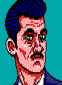
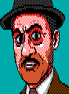

|
Quid Pro Quo Hints
Click to reveal each hint
|
Suggested investigation steps:
- Identify all portraits and write down everyone's first and last names
- Identify the fingerprint on the metal plate
- Match characters with their roles (snitch, convicted robber, disgruntled customer
etc.)
- Identify senders and recipients of all hand-written notes
- Find what events connected people with each other
- Identify potential motives and capabilites of each character
- Try to chain events together into a coherent timeline
|
How many clues are there to find? 24
Are all clues needed in the story? No
Are some clues used multiple times? Yes
Who's fingerprint is on the metal plate? Lorenz Grödel's
What is the metal plate? Passkey to the alarm
What's necklace's role? Passkey was attached to it as a clasp
What's the meaning of 262800? 6 yrs * 365 days * 24 hrs * 5 Groschen per
hour
How many people were involved in preparing the robbery? 3
How many people physically broke into the bank? 2
|
|
Jacek
Dušek
|
His parents were victims of Lorenz's investment scam
Smokes red cigarette brand
Tells Matěj about the scams and follows his instructions
Works with Elsa on getting the alarm passkey with Lorenz's fingerprint on
it
Enters the bank during the robbery and cuts the hole in the safe
|
|
Elsa
Ziegler
|
Daughter of Heinrich Ziegler, of Ziegler Alarm Systems
Stole alarm passkey from father's factory
Attached the passkey to a necklace as a clasp
Lured Lorenz on a date and got him to touch the necklace and leave a
fingerprint
Dropped the necklace off for Jacek
|
|

Leon
Brotz
|
Informs boss that Matěj will soon be released
Tasked by Lorenz with paying Matěj off with hush money
Decides to calculate the amount to pay by using the minimum wage
|
|
Lorenz
Grödel
|
Owner of the banking house
Ex-partner of Matěj, whom he betrayed and got imprisoned
Isn't happy Matěj is out and asks Leon to pay him off
Romantically pursues Elsa
Touched the necklace during the date with Elsa and left his fingerprint
|
|

Matěj
Kozár
|
Career bank robber, able to break into safes without any tools
Betrayed by his ex-partner Lorenz and sent to prison for 6 years
Received hush money from Lorenz after being released
Finds out about Lorenz's scams from Jacek
Decides to take revenge and orchestrates the robbery
Enters the bank during the robbery and opens the safe
Leaves just the hush money in the safe as a taunt for Lorenz
|